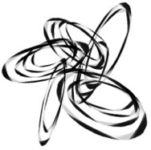
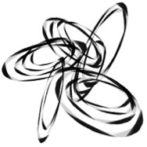
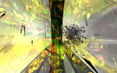
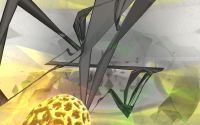
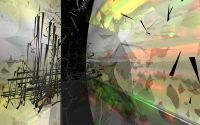
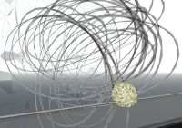
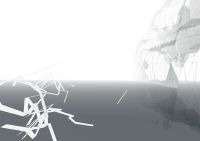
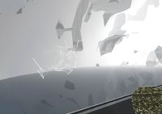

SuntithenaiOverviewSuntithenai is a collaborative work produced as an amalgamation of several graduate student projects within the Media Arts and Technology Program at UCSB. Suntithenai contains generative audio-visual systems written by Graham Wakefield and Lance Putnam that explore emergence as a pluri-modal artistic principle. These systems are stereo-optically displayed within a 3-D model of the CNSI building designed in Maya by Ji Haru, and controlled by a wireless input device designed and built by Dan Overholt. Our work signifies the first step of ongoing research that is intended to design a general architecture for future artistic and scientific research in the AlloSphere itself. Our work involves digital media of sound, image, virtual worlds and physical manifestations inspired by algorithmic explorations of dynamic, chaotic and generative systems.
sScale
sScale explores the production of complexity by means of time-delay networks. A single stream of samples is propagated through the network in order to transform it into something revealing a more intricate structure. Feedback is used to create resonant nodes in the waveform that excite regions of frequencies. Resonance is used as a means for directing otherwise random or periodic signals into a region of complexity. Time-delays are used at the end of the processing chain to extend the dimensionality of the 1-d waveform. The output of the network is auralized directly and visualized as a 3-d Lissajous figure.
  Assemblage / t0 Coincident
Within the virtual AlloSphere, a network of mobile cuniform agents programmed by Graham Wakefield dance according to shifting relationships of attraction and association. Occasional pulses are broadcast to neighboring agents in cascading hierarchies, and sonified as pitched tones which reverberate in the AlloSphere environment. The sonic reverberations come from a network of audio delay lines which are encouraged to feed back, and maneuvered towards diversity and change by an algorithm designed by Graham Wakefield and inspired by Marcos Novak. The contents of the delay lines are visualized in the colored light storms that rage through the three-dimensional data from an Magnetic Resonance Imaging scan of Marcos Novak's brain. The agents, the Lissajous figure and the environment itself are all being aurally spatialised over 8 loudspeakers based on the holophonic technique of Ambisonics, using software extensions written by Graham Wakefield. The spatial image is scaled and rotated in sync with the user's movements through the virtual world.
TransForms
[Transforms] is a sculptural computer animation which shows continuous
shifts in forms and colors of patterns on its surface in the virtual
space. An initial set of simple spheres deforms into very complex organic
forms by tornado-like forces.
This abstract animation shows the aesthetic concern of forms and colors in
virtual space. The dynamic system of particles in force fields shows the
change of forms as a dialog with nature by mathematical calculation. Like
rocks, which are formed by a process of wind or rain, the shapes transform
themselves under dynamic conditions.
A particle is attached to each vertex of the polygon surface. Using a
dynamic field, these particles pull and change the location of vertices
while a noisy color map changes with time-based key frame animation.
This is a non-real time animation. It is rendered in Maya with two set of images for
stereoscopic view.
120-cell
The formation of the input device was developed using procedural modeling techniques, and constructed using a Z Corporation 3-D printer capable of building solid objects. It is based on the hecatonicosachoron, a finite regular 4-dimensional polytope also known as the hyperdodecahedron, or 120-cell. This mathematical model was algorithmically sculpted to provide a more organic look and feel while preserving the 600 vertices, and the final object represents its shadow projected into three dimensions. A bluetooth wireless sensor array based on the CREATE USB Interface by Dan Overholt is embedded internally, and acceleration and gyro-based sensors detect movement and orientation from external manipulation. The data from the controller is mapped to input parameters of the virtual world, and allows users to change perspective and let their presence be felt inside the AlloSphere simulation in several different ways.
MediaDemonstration at CITS conference at UCSB.
URLsParticipants:Graham WakefieldDan Overholt Lance Putnam Haru Ji References:Marcos NovakMedia Arts and Technology Allosphere |
Screenshots     |
{kind=link}
{kind=link}
{kind=link}
{kind=link}
{kind=link}
{kind=link}